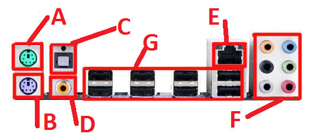

Как собрать компьютер
Шаг2.Сборка
В этом разделе мы узнаем, как собрать игровой компьютер собственными руками.
Для начала нам понадобится пустой корпус.
Потом мы откручиваем боковую стенку.
Для игрового PC можно купить корпус подешевле.Следующий пункт это материнская плата.Лично я вам рекомендую покупать плату от Asus, потому что у них они всегда качественные.
Начнем процесс сборки нашего компьютера.
Устанавливаем материнскую плату.
Плату устанавливаем на ровную поверхность, не слишком жесткую, желательно на коробку от самой же материнской платы, т.е. на бетонный подоконник ставить не стоит, сзади контакты, которые легко погнутся.
Далее мы берем наш процессор.
Сейчас для игрового компьютера лучше покупать топовый Intel Core i7.Так же очень хорошие процессоры от AMD.Находим сокет.
Сокет обычно защещен крышкой,но бывают такие модели,которые не имеют этой крышки, если да,то мы её открываем.Потом вставляем процессор в сокет.
Важно сделать все правильно.
Теперь возьмем кулер.
Устанавливаем кулер вниз термопастой (Полосы снизу кулера) на процессор, у него 4 ножки, а у материнской платы 4 пазы, каждая ножка входит в пазу и должен произойти шелчок, это очень важно. И не забудьте подключить его к материнской плате.Дальше следует блок питания.
Теперь мы начинаем установку блока питания, вставляем его в специально отведенное место и закручиваем его с обртной стороны корпуса болтами. Подключаем его к материнской плате.

Затем следует установка Blu-Ray.
Установите новый привод в свободный отсек. Закрепите привод с помощью винтов или специального крепежного механизма. Найдите сзади привода разъем для подключения кабеля питания и подсоедините к нему свободный разъем кабеля, идущего от блока питания. Найдите свободный SATA порт на вашей материнской плате (он будет похож на такой же порт на корпусе самого привода). Соедините эти два порта с помощью специального интерфейсного SATA кабеля. Включите компьютер. Установите диск с драйвером в старый привод. Следуйте подсказкам мастера установки. На этом все закончено. Теперь вы можете использовать новую технологию для просмотра качественного контента на экране дисплея.
Настал момент жесткого диска
Интерфейс жесткого диска состоит из двух разъемов – «короткого» и «длинного». Рисунок обоих напоминает букву «Г». Через короткий разъем передаются данные с материнской платы, через второй подается напряжение от блока питания.К разъему данных подключается SATA кабель. Внешний вид разъемов может быть разным: прямым и Г-образным, с защелкам и без. Самое главное, перепутать кабели или воткнуть другой стороной не получится, поэтому бояться не стоит. Ко второму «большому» разъему питания подключается штекер, идущий от блока питания. Коннекторы SATA одеваются и снимаются достаточно легко, но расшатывать сильно их не стоит. Второй конец кабеля данных вставляется в разъем на материнской плате. Он также может быть прямым, Г-образным. Разъемы обычно ярко раскрашены и легко узнаваемы. Мы закончили самое тяжелое в сборке компьютера,но это еще не все.
Установка оперативной памяти
Берем руками плату оперативной памяти и вставляем в разъем. Смотрите, чтобы разрез на линейке памяти совпал с выступом на слоте материнской платы. После чего необходимо защелкнуть фиксаторы по бокам. После этого ничего делать не нужно, можете устанавливать другие комплектующие, если надо, закрывать крышку и проверять.На этом мы закончим с оперативкой.
Теперь пришло время для видеокарты

Определите, какой слот расширения находится в вашем компьютере. В компьютере существует много разных типов слотов расширения, например PCI, PCI-e, PCI-e2.0 и AGP. Вы можете определить, какой слот имеется в вашем компьютере, взглянув на материнскую плату (вы должны будете отключить компьютер от питания и вытащить ее из корпуса) или прочитав схему материнской платы в руководстве пользователя. Если у вас нет печатной версии руководства, можете ввести в поисковую систему тип своего компьютера и найти онлайновую версию. После этого вам необходимо будет купить видеокарту, подходящую под имеющийся у вас слот. Найдите слот, в котором находится старая видеокарта или слот, в которую вы будете вставлять новую видеокарту. В зависимости от конфигурации компьютера и материнской платы, вам может понадобиться положить компьютер на бок. Установите новую видеокарту. Надежно вставьте видеокарту в слот. Убедитесь, что видеокарта надежно вставлена в слот компьютера. Компьютер не включится, если видеокарта не будет полностью стоять на своем месте.Видеокарты для слотов AGP немного вычурнее, нежели видеокарты для слотов PCI.Не забудьте вставить в видеокарту подходящий силовой кабель, если она в нем нуждается.
И вот мы дошли до пред последнего шаг,установка аудеокарты
Посмотрите, какой свободный слот у вас есть. Обычно на материнских платах находятся три или четыре свободных слота, в которые можно вставить аудиокарту. Напротив выбранного вами слота необходимо либо аккуратно выломать заглушку (здесь стоит отметить, что выламывать следует ровно столько заглушек, сколько единиц оборудования вам нужно подключить, в противном случае в образовавшиеся отверстия будет проникать пыль), либо открутить ее с помощью все той же крестообразной отвертки. Достаньте звуковую карту из коробки. Затем с помощью специальной направляющей закрепите карту напротив слота, после чего окончательно зафиксируйте ее в гнезде. Убедившись, что карта ровно встала в гнездо, возьмите отвертку и прикрутите направляющую к корпусу.
В этом абзаце мы расскажим, как присоединить провода
Наконец подошел последний этап сборки компьютера. Вот так выглядит разъем, к которому мы будем подключать шлейф (провод) от блока питания.
А вот так будет выглядеть шлейф, который идет от блока питания и подключается к данному разъему. Сразу попрошу обратить внимание на то, что перед Вами находится разъем на 24 pin (это количество штырьков), также существуют разъемы и на 20 pin. Вот так выглядят разъем и кабель после подключения: Выше отмечен разъем к которому подключается кабель для питания центрального процессора, который (кабель) выглядит следующим образом: Я думаю, что нет необходимости напоминать о том, что защелка, которая имеется на одной из сторон шлейфа, должна плотно защелкнуться на разъеме, дабы избежать внезапного отключения питания. На нашей системной плате отмечен разъем для подключения флопика ( устройство, предназначенное для чтения дискет, сейчас встречается в основном на старых компьютерах). Сразу скажу, что внешне он сильно похож на порт IDE ATA (4), но если присмотреться, то сразу станет видно, что IDE ATA немного шире. Шлейф, которым мы можем подключить флопик к нашей «метеринке» имеет такой внешний вид: Сейчас мы будем говорить о разъеме для подключения IDE ATA. Если кто-то не знает или не помнит, то к данному разъему можно подключить жесткий диск или DVD привод, при условии, что у Вашего устройства интерфейс IDE ATA. Это шлейф, которым мы будем подключать оборудование к разъему IDE ATA: Как Вы помните, к разъему IDE ATA мы можем одновременно подключить два устройства и на изображении это прекрасно видно: один конец мы подключаем к системной плате, а два других можем использовать по своему усмотрению. Спешу Вас порадовать, уважаемые любители компьютерного мира, на этом подключение проводов к материнской плате не заканчивается, и мы двигаемся дальше. Сейчас настал черед поговорить об Sata разъемах. На первом изображении системной платы эти разъемы обозначены цифрой 5. А это внешний вид кабеля, который подключается к Sata разъему. Посредством подобных кабелей к материнской плате подключаются жесткие диски и CD-DVD приводы и Sata-интерфейсом. В качестве примера можно взглянуть на рисунок ниже, где к описанному разъему подключен винчестер (жесткий диск). Как видите, ошибиться с подключением проводов к материнской плате не так просто как могло показаться на первоначальном этапе. Еще одним разъемом, который может подключаться к Вашей материнской плате является External Serial ATA (eSATA). Ниже показано изображение самого разъема и кабеля, который мы к нему можем подключить. Коль уж мы занялись подключением проводов к материнской плате, то давайте сразу подключим провода от блока питания и к жесткому диску и к CD-DVD приводу.
Предположим, что все поняли, что сейчас мы подключили провод с питанием к жесткому диску, кстати, сам провод выглядит так (при подключении CD-DVD привода используется тот же провод): А непосредственное подключение к CD-DVD приводу выглядит так: Надеюсь, что Вы еще не устали, так как мы все еще продолжаем производить подключение проводов к материнской плате! Сейчас у нас на очереди подключение передней панели, то есть подключение к системной плате кнопок Power, Reset, а также диодов с передней панели. А сейчас, ВНИМАНИЕ! Для того, чтобы правильно подключит кнопки включения и перезагрузки, совместно со светодиодами Вам потребуется инструкция к материнской плате. Провода, идущие с вышеупомянутых кнопок и диодов, обычно подписаны, поэтому вам останется только посмотреть в инструкции места для подключения этих проводов. Посмотрите на рисунки, и Вам все сразу станет ясно. Ппримерно так будет выглядеть таблица в инструкции к Вашей системной плате:
Прошу извинить меня, но в рисовании я не силен, поэтому я просто перерисовал таблицу из инструкции к моей системной плате. Если уже кто-то подустал, то спешу Вас порадовать - подключение проводов к материнской плате уже скоро закончится, нам осталось разобраться лишь с несколькими разъемами. 9. Смотрим на заднюю панель:

Опять же, напомню, что в рисовании я не силен, поэтому показываю, что умею. Сейчас пройдемся по пунктам: Во-первых, PS/2 – к данному выходу подключается мышь, если она у Вас, конечно, не через USB подключается. Причем данный разъем всегда зеленого цвета. Во-вторых, PS/2 – разъем для подключения клавиатуры, если также как и в случае с мышью она у Вас не подключается через USB-разъем. Данный разъем имеет постоянную окраску – фиолетовую. В-третьих, Цифровой вход. В-четвертых, Цифровой выход. В-пятых, Разъем для подключения сетевого кабеля, то есть через этот порт Вы можете подключиться к локальной сети или интернету, используя внешний модем. В-шестых, Выходы для подключения колонок, наушников, а также микрофона. В-седьмых, USB-порты, которые с уверенностью можно назвать универсальными, поскольку большое количество периферийного оборудования подключается именно через эти разъемы (принтер, сканер и т.д.). На этом мы завершаем изучать подключение проводов к материнской плате.И на этом мы закончим со сборкой компьютера!